A cleaner, faster way to book flights
The existing flight booking experience was cluttered, confusing, and full of hidden costs. I led the end-to-end design — from user research and survey analysis to information architecture, component library, and high-fidelity screens — creating a booking flow that users could trust and complete in under 2 minutes.
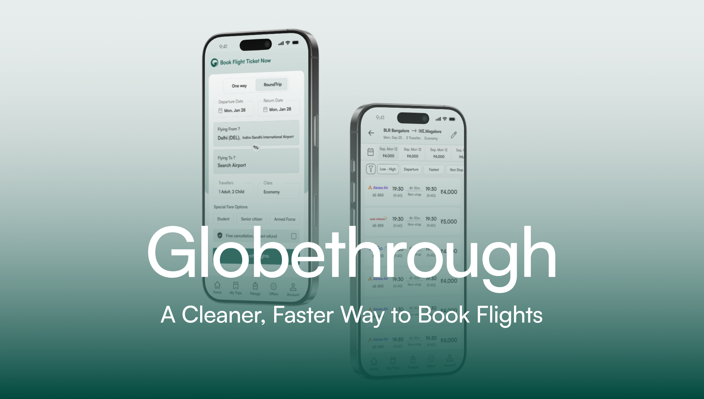
Globethrough is a flight booking platform built for the Indian market. The existing app had a functional backend but the user experience was fragmented — cluttered UI, confusing navigation, and a booking flow that made users abandon mid-way. I was brought in to redesign the entire experience from the ground up.
Redesign the flight booking app. Make it cleaner and easier to use than competitors like MakeMyTrip, Yatra, and Ixigo.
User research with 100+ survey responses, information architecture, a modular component library, a streamlined 4-step booking flow with 85% task success rate, and 15+ high-fidelity screens ready for development.
Before designing anything, I conducted a survey with over 100 respondents to understand the real pain points of booking flights in India. The results shaped every design decision that followed.
I've experienced sudden price jumps or hidden charges at the last step of booking.
I get bombarded with fake alerts or unnecessary add-ons I don't want.
I don't trust the final amount on screen — it keeps changing or doesn't include all charges.
I feel overwhelmed by messy flight apps full of too many tabs, banners, and distractions.
Flight apps rarely help when something goes wrong — I'm left figuring it out myself.
Booking a flight feels like a long process with too many steps and repeating the same info.
The research made one thing clear: Users don't want more features. They want pricing they can trust, a clean interface without dark patterns, and a booking flow that doesn't waste their time. These three pillars drove every design decision.
Nearly 3 out of 4 users reported experiencing sudden price jumps at the last step. Competitors use this as a dark pattern to lock users in. Globethrough's approach: show the complete price breakdown from the search results page itself. No surprise charges at checkout. The price you see is the price you pay.
Users are exhausted by "Only 2 seats left!" countdown timers and pre-checked insurance boxes. Globethrough takes the opposite approach: no fake scarcity alerts, no pre-selected add-ons, no manipulative UI. Add-ons like meals, seats, and baggage are presented clearly with a "Skip" option that's just as prominent as the "Add" button.
Competitor apps cram promotional banners, loyalty program upsells, and cross-sells onto every screen. The user's primary task — finding and booking a flight — gets buried. Globethrough's design principle: every screen has one primary action. Search. Compare. Select add-ons. Pay. Nothing else competes for attention.
Competitors require 6–8 steps to complete a booking, with redundant data entry and confusing back-navigation. I designed Globethrough's flow in 4 steps: Search → Select flight → Choose add-ons (seat/meal/baggage) → Review & Pay. Each step has clear progress indication and allows easy backtracking. This achieved an 85% task success rate in usability testing.
The IA was designed around user intent, not feature count. The bottom navigation has 5 core destinations — Home, My Trips, Packages, Offers, and Account — each serving a distinct user need. The booking flow is intentionally linear to prevent confusion.
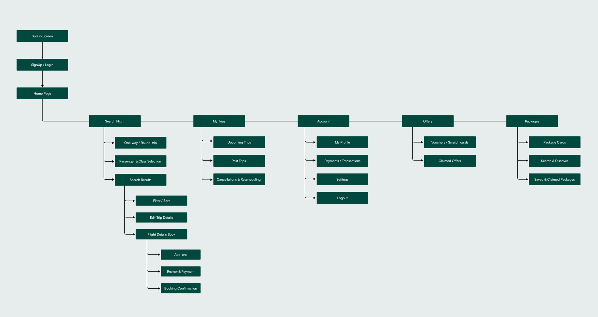
Why this structure works: The core booking flow (Search → Results → Flight Details → Add-ons → Payment → Confirmation) is completely linear — no branching, no dead ends. This reduced the average booking time and prevented the confusion caused by nested navigation in competitor apps.
Every competitor makes the booking flow feel long. I simplified it into 4 clearly defined steps. Each step has one primary action — no distractions, no upsells cluttering the path.
Every price shown in the search results includes all taxes and fees. The "View Breakup" button on the add-ons page shows exactly what each component costs. Users never see a different number at checkout than what they expected. This directly addresses the #1 complaint from the survey (73% experienced hidden charges).
Seat, Meal, and Baggage are separated into tabs — not crammed onto one screen. Each tab has a clear "Skip" button that's styled the same as the proceed button. Nothing is pre-selected. The running total at the bottom always shows "View Breakup" so users know exactly what they're paying for.
A horizontal scrollable strip shows prices across dates, so flexible travellers can spot the cheapest option instantly. Below that, filter chips (Low-High, Departure, Fastest, Non-stop) are visible without opening a modal. This reduces the number of interactions needed to find the right flight from 5+ to 2.
Competitors use vibrant gradients, promotional banners, and animated badges everywhere. Globethrough uses a clean white background with deep teal (#0B4D3C) as the only accent color. The result: the user's eye goes directly to flight information instead of being pulled toward ads and promotions. Typography uses the Satoshi font family for a modern, readable feel.
The splash screen features the Globethrough logo centered over a subtle world map — clean and confident. The home screen leads with "Book Flight Ticket Now" and a one-way/round-trip toggle. Every input field (dates, airports, travellers, class) is immediately visible — no progressive disclosure for the primary task.
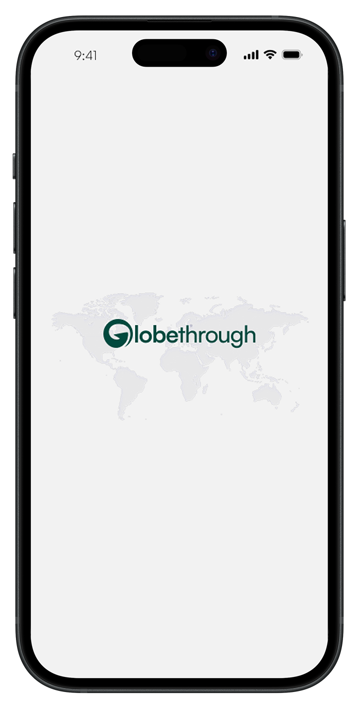
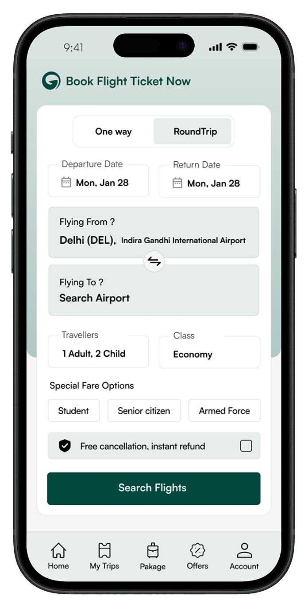
Instead of a blank screen or generic spinner, the loading state shows a branded airplane illustration with "Searching for the Flights..." and reassuring copy: "Sit back and relax as we scan for the perfect flights just for you." This micro-interaction maintains engagement during what would otherwise be a frustrating wait.
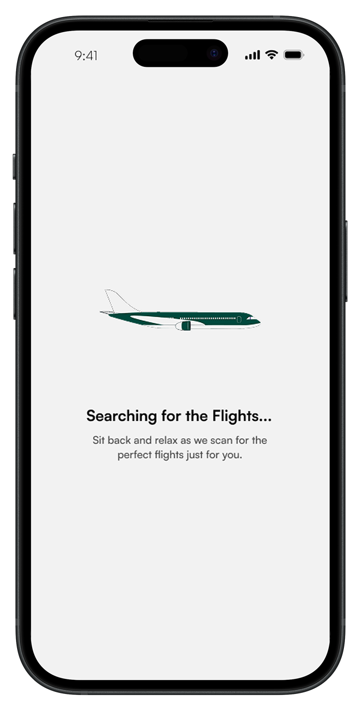
The results page puts comparison data first. The top bar shows route details and traveller info. A date-wise pricing strip lets users spot cheaper dates at a glance. Filter chips (Low-High, Departure, Fastest, Non Stop) are always visible. Each flight card shows airline, times, duration, stops, and the complete fare — all in one scannable row.
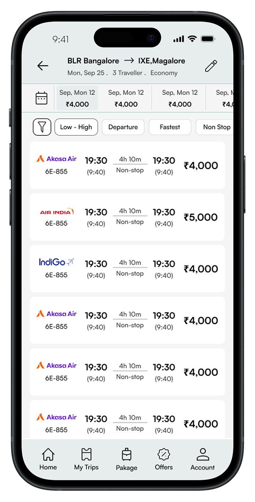
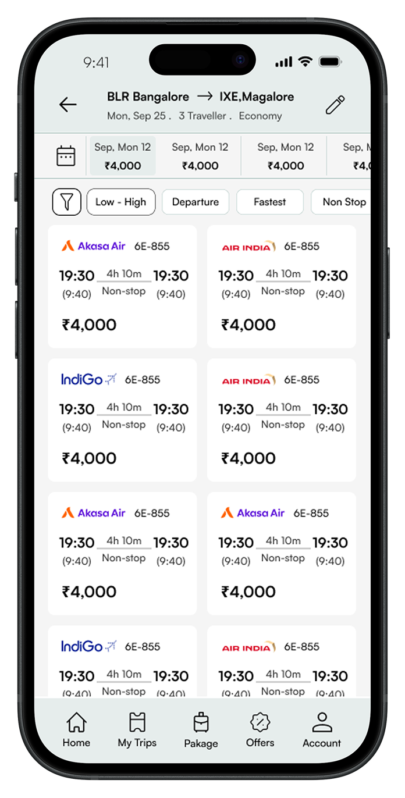
The add-on selection uses a tabbed interface — Seat, Meal, and Baggage each get their own focused view. The seat map shows available seats with color-coded pricing. The meal selection shows food images with veg/non-veg indicators. Baggage options show weight and price clearly. Every tab has a "Skip" button that's just as styled as the proceed button — no dark patterns.
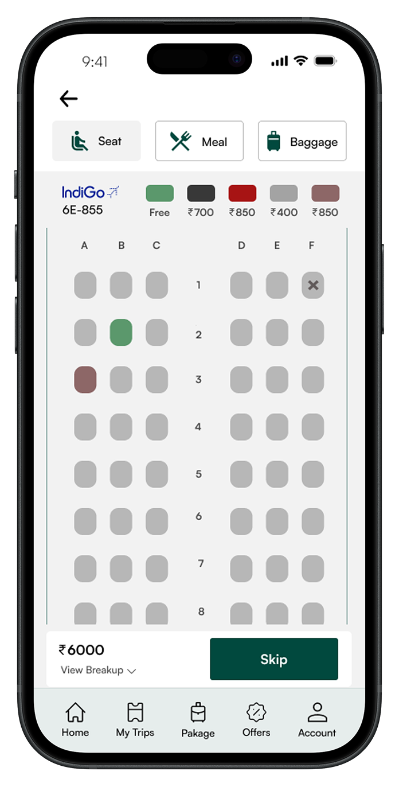
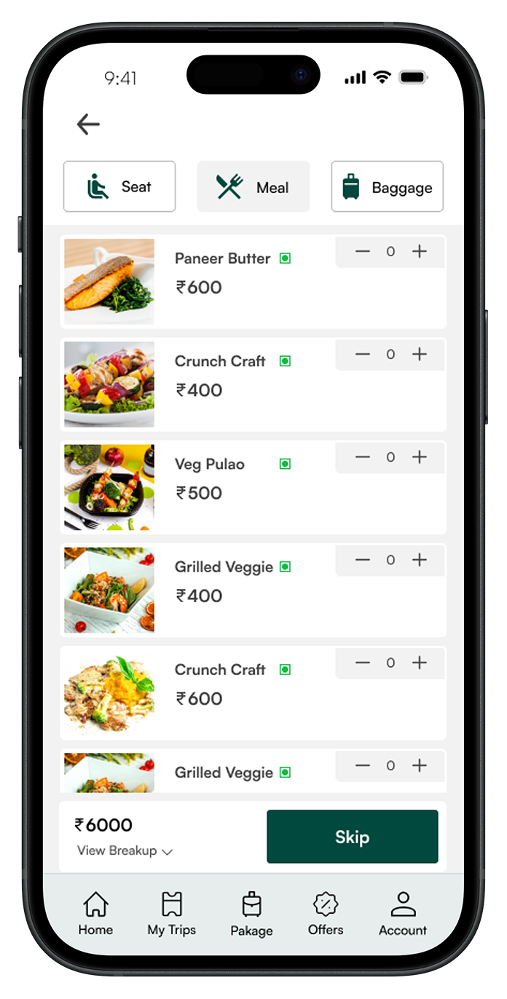
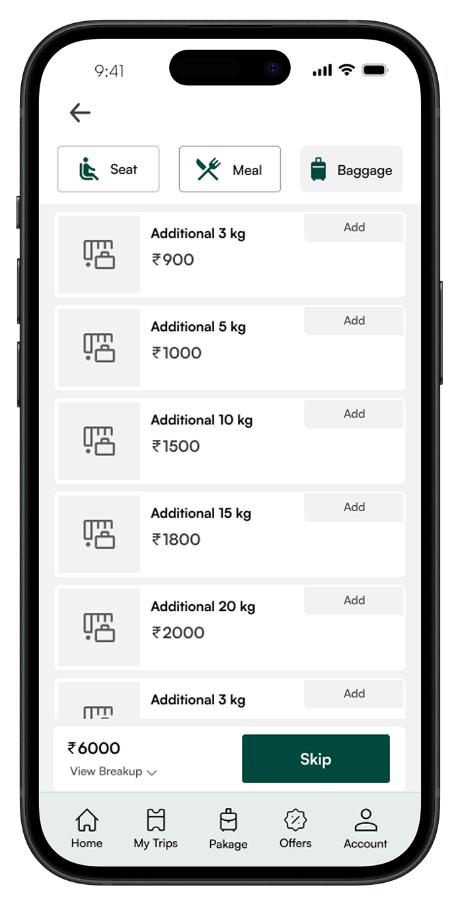
The final designs work across all screen sizes. The booking form on the home screen and the search results page — the two most critical screens — are shown here in device frames to demonstrate how the clean layout translates to real-world usage. The deep teal accent creates a calm, trustworthy atmosphere that differentiates Globethrough from the visual chaos of competitor apps.
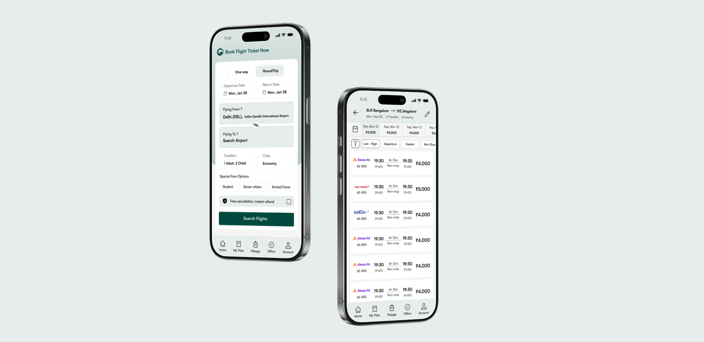
A unified component library ensures consistency across every screen. The system includes button variants (primary filled, secondary outlined), typography scale (Satoshi font family at 18/16/14px with defined weights), bottom navigation states, input fields with date pickers, search bars, and flight cards. Every component is documented with spacing and sizing specs for developer handoff.
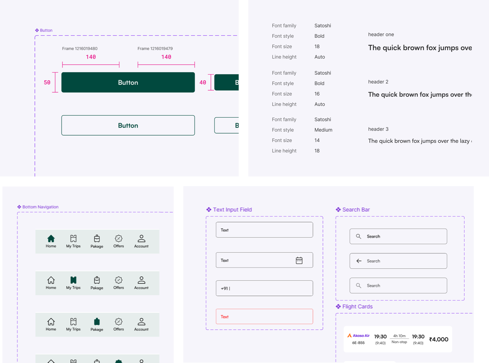
The redesign transformed a cluttered, confusing booking experience into a clean, trustworthy flow. Every design decision was backed by real user data — not assumptions or industry trends.
The original app tried to do everything on every screen — promotions, loyalty programs, cross-sells. The redesign gives each screen one job. Users can now search, compare, and book a flight without being distracted by content that doesn't serve their immediate task.
Every decision — from the transparent pricing to the un-dark-patterned add-ons to the 4-step flow — came directly from what 100+ real users told us about their frustrations with existing flight booking apps. This isn't a redesign based on "what looks good" — it's based on what users actually need.
The app's job is to get you from "I need a flight" to "Booked" — cleanly, honestly, and fast.
That was the core design principle. Every screen, every interaction, every design decision came back to this idea. No dark patterns. No hidden fees. Just a booking experience you can trust.